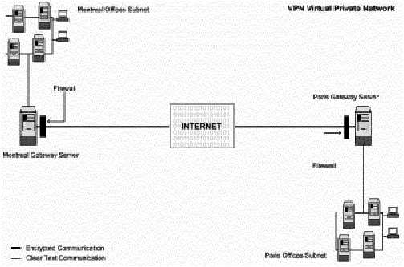

L
i n u x P a r
k
при
поддержке ВебКлуба |
Глава 16 Серверное программное обеспечение (Сетевой сервис шифрования)
- FreeS/WAN VPN (часть 1)В этой главе
Linux OPENSSL
сервер
Конфигурации
Команды
Организация
защиты Openssl
Linux
FreeS/WAN VPN
Настройка RSA
private keys secrets
Требования по
настройке сети для IPSec
Тестирование
инсталляции
|
 |
Краткий обзор
Защита клиент-серверных соединений при помощи SSL отличный
выбор, но иногда требуется безопасный канал, обеспечивающий полную
конфиденциальность, аутентификацию и целостность данных между двумя межсетевыми
экранами через Интернет. Для этого был создан IPSEC.
IPSEC – это Internet Protocol SECurity. Он использует сильную
криптографию для обоих сервисов: аутентификации и шифрации. Аутентификация
гарантирует что пакеты идут от правильного отправителя и не будут изменены при
пересылке. Шифрование предотвращает неавторизованное чтение содержимого пакетов.
IPSEC может защищать любые протоколы работающие поверх IP и любые среды передачи
используемые под IP. IPSEC может также предоставлять некоторые сервисы
безопасности в фоновом режиме, с невидимым для пользователя влиянием. Более
того, он может защищать смешанные протоколы, запускаемы через комплексную
комбинацию сред передачи (например, IMAP/POP и т.д.) без внесения в них
изменений, так как шифрование идет на уровне IP.
Сервис IPSEC позволяет вам создавать безопасные туннели через
небезопасные сети. Каждая передача через небезопасную сеть шифруется шлюзом
IPSEC и расшифровывается шлюзом на другом конце. В результате возникает
Виртуальная Приватная Сеть (Virtual Private Network) или VPN. Эта сеть является
частной даже при том, что включает несколько машин объединенных небезопасным
Интернет.

Эти инструкции предполагают.
Unix-совместимые
команды.
Путь к исходным кодам “/var/tmp” (возможны другие
варианты).
Инсталляция была проверена на Red Hat Linux 6.1 и 6.2.
Все шаги
инсталляции осуществляются суперпользователем “root”.
Ядро версии
2.2.14.
FreeS/WAN VPN версии 1.3
Пакеты.
Домашняя страница ядра Linux: http://www.kernelnotes.org/
Вы должны скачать:
linux-2_2_14_tar.gz
Домашняя страница FreeS/WAN VPN: http://www.freeswan.org/
FTP сервер FreeS/WAN VPN: 194.109.6.26
Вы должны скачать:
freeswan-1.3.tar.gz
Тарболы.
Хорошей идеей будет создать список файлов
установленных в вашей системе до инсталляции FreeS/WAN и после, в результате, с
помощью утилиты diff вы сможете узнать какие файлы были установлены.
Например,
До инсталляции:
find /* >
Freeswan1
После инсталляции:
find /* >
Freeswan2
Для получения списка установленных файлов:
diff Freeswan1 Freeswan2 >
Freeswan-Installed
Раскройте тарбол:
[root@deep /]#
cp freeswan-version.tar.gz /usr/src/
[root@deep /]# cd /usr/src
[root@deep
src]# tar xzpf freeswan-version.tar.gz
[root@deep src]# chown -R 0.0
/usr/src/freeswan-version
Предварительные требования.
Инсталляция IPSEC FreeS/WAN Virtual Private Network требует
некоторой модификации в вашем оригинальном ядре, так как FreeS/WAN должен быть
включен и зарегистрирован в вашем ядре перед тем как вы его используете. Из этих
соображений первым шагом инсталляции FreeS/WAN будет переход в секцию “Ядро
Linux” этой книги и следование инструкциям о том, как инсталлировать ядро на
вашей и вернуться назад к секции “Linux FreeS/WAN VPN” (эта секция) после
выполнения команд “make dep; make clean”, но перед выполнение “make
bzImage”.
ПРЕДУПРЕЖДЕНИЕ: Очень рекомендуем, чтобы вы не
компилировали что- нибудь в ядре с оптимизационными флагами, если вы планируете
инсталлировать программное обеспечение FreeSWAN. Любые оптимизационные флаги
добавленные в ядро Linux будут создавать сообщения об ошибках в FreeSWAN IPSEC.
Все флаги документированные в главе 5, “Конфигурирование и Создание безопасного
и оптимизированного ядра” применимы без каких-либо проблем со всем программным
обеспечением описанном в книге за единственным исключением - FreeSWAN IPSEC. Так
что повторюсь еще раз, не используйте оптимизационные опции и флаги в вашем ядре
Linux, когда компилируете или патчите его для поддержки FreeSWAN.
Компиляция и добавление FreeS/WAN в ядро
Вы должны модифицировать “Makefile” в каталоге с исходными
кодами FreeS/WAN и подкаталогах “utils”, “klips/utils”, “Pluto” и “lib”, чтобы
определить пути для инсталляции. Мы должны модифицировать эти файлы, чтобы
расположение файлов соответствовало структуре файловой системы Red Hate и чтобы
после инсталляции они попадали под нашу переменную окружения PATH.
Шаг
1
Переместитесь в верхний уровень нового каталога с исходными
кодами FreeS/WAN и введите следующие команды на вашем терминале:
Редактируйте
файл Makefile (vi Makefile) и сделайте в нем следующие изменения:
PUBDIR=/usr/local/sbin
Должен быть:
PUBDIR=/usr/sbin
PRIVDIR=/usr/local/lib/ipsec
Должен быть:
PRIVDIR=/usr/lib/ipsec
FINALPRIVDIR=/usr/local/lib/ipsec
Должен быть:
FINALPRIVDIR=/usr/lib/ipsec
MANTREE=/usr/local/man
Должен быть:
MANTREE=/usr/man
Шаг 2
Редактируйте файл Makefile в подкаталоге “utils” (vi
utils/Makefile) и сделайте в нем следующие изменения:
PUBDIR=/usr/local/sbin
Должен быть:
PUBDIR=/usr/sbin
PRIVDIR=/usr/local/lib/ipsec
Должен быть:
PRIVDIR=/usr/lib/ipsec
FINALPRIVDIR=/usr/local/lib/ipsec
Должен быть:
FINALPRIVDIR=/usr/lib/ipsec
MANTREE=/usr/local/man
Должен быть:
MANTREE=/usr/man
Шаг 3
Редактируйте файл Makefile в подкаталоге “klips/utils” (vi
klips/utils/Makefile) и сделайте в нем следующие изменения:
BINDIR=/usr/local/lib/ipsec
Должен быть:
BINDIR=/usr/lib/ipsec
MANTREE=/usr/local/man
Должен быть:
MANTREE=/usr/man
Шаг 4
Редактируйте файл Makefile в подкаталоге “pluto” (vi
pluto/Makefile) и сделайте в нем следующие изменения:
BINDIR=/usr/local/lib/ipsec
Должен быть:
BINDIR=/usr/lib/ipsec
MANTREE=/usr/local/man
Должен быть:
MANTREE=/usr/man
Шаг 5
Редактируйте файл Makefile в подкаталоге “lib” (vi
lib/Makefile) и сделайте в нем следующие изменения:
MANTREE=/usr/local/man
Должен быть:
MANTREE=/usr/man
Шаг 6
Редактируйте файл Makefile в подкаталоге “libdes” (vi
libdes/Makefile и сделайте в нем следующие изменения:
LIBDIR=/usr/local/lib
Должен быть:
LIBDIR=/usr/lib
BINDIR=/usr/local/bin
Должен быть:
BINDIR=/usr/bin
INCDIR=/usr/local/include
Должен быть:
INCDIR=/usr/include
MANDIR=/usr/local/man
Должен быть:
MANDIR=/usr/man
Шаг 7
Сейчас мы должны скомпилировать и проинсталлировать FreeSWAN на
сервере:
[root@deep freeswan-1.3]# make
insert
[root@deep freeswan-1.3]# make programs
[root@deep freeswan-1.3]#
make install
Команды “make insert” создает символическую ссылку
“/usr/src/linux/net/ipsec” на подкаталог с исходными кодами KLIPS, патчит
некоторых файлов ядра, добавляет конфигурацию по умолчанию в конфигурационный
файл ядра и в заключении создает коммуникационный файл KLIPS - “/dev/ipsec”,
если его еще нет. Команда “make programs” создает библиотеки, Pluto и различные
пользовательские утилиты. “make install” будет инсталлировать демон Pluto и
утилиты и делать их запускаемыми при загрузке системы.
Переконфигурирование и инсталляция ядра с поддержкой FreeS/WAN VPN
Сейчас, мы должны вернуться в каталог “/usr/src/linux” и
выполнить следующие команды для реконфигурирования ядра с поддержкой
FreeS/WAN:
[root@deep freeswan-1.3]# cd
/usr/src/linux
[root@deep linux]# make config
Первое, что надо сделать – это включить поддержку FreeS/WAN в
ядре. В версии 2.2.14 ядра, новая секция, связанная с frees/WAN VPN, называется
“IPSec options (FreeS/WAN)”. Вам нужно ответить Y на следующие вопросы.
IPSec options (FreeS/WAN)
IP Security Protocol
(FreeS/WAN IPSEC) (CONFIG_IPSEC) [Y/n/?]
IPSEC: IP-in-IP encapsulation
(CONFIG_IPSEC_IPIP) [Y/n/?]
IPSEC: PF_KEYv2 kernel/user interface
(CONFIG_IPSEC_PFKEYv2) [Y/n/?]
IPSEC: Enable ICMP PMTU messages
(CONFIG_IPSEC_ICMP) [Y/n/?]
IPSEC: Authentication Header (CONFIG_IPSEC_AH)
[Y/n/?]
HMAC-MD5 authentication algorithm (CONFIG_IPSEC_AUTH_HMAC_MD5)
[Y/n/?]
HMAC-SHA1 authentication algorithm (CONFIG_IPSEC_AUTH_HMAC_SHA1)
[Y/n/?]
IPSEC: Encapsulating Security Payload (CONFIG_IPSEC_ESP)
[Y/n/?]
3DES encryption algorithm (CONFIG_IPSEC_ENC_3DES) [Y/n/?]
IPSEC
Debugging Option (DEBUG_IPSEC) [Y/n/?]
ЗАМЕЧАНИЕ. Все настройки, которые вы сделали в различных
секциях ядра до первого запуска команд “make config”, “make dep” и “make clean”
будут сохранены. Поэтому необходимо настроить только раздел “IPSec options
(FreeS/WAN)” так, как это описано выше.
Некоторые параметры настройки сети включаются автоматически,
даже если вы выключили их. Это связано с тем, что IPSEC нуждается в них. Какой
бы ни была программа конфигурирования ядра, вы должны обратить внимание на
некоторые проблемы. В частности, проверьте чтобы не были отключены следующие
опции из секции “Сетевые опции”:
Kernel/User
netlink socket (CONFIG_NETLINK) [Y/n/?]
Netlink device emulation
(CONFIG_NETLINK_DEV) [Y/n/?]
Компиляция и инсталляция нового ядра с поддержкой FreeS/WAN
Сейчас мы включили поддержку FreeS/WAN VPN в ядре и мы можем
его компилировать и инсталлировать.
Возвращаемся в каталог “/usr/src/linux” и запускаем следующие
команды:
[root@deep linux]# make dep; make clean;
make bzImage
После окончания их работы, следуйте за инструкциями,
приведенными в главе 5 “Конфигурирование и создание безопасного и
оптимизированного ядра” для нормальной инсталляции нового ядра. После того, как
вы проинсталлируете новый образ ядра, system.map, модули (если нужно) и
определите в файл lilo.conf загрузку нового ядра, нужно редактировать и
настроить конфигурационные файлы связанные с FreeS/WAN “ipsec.conf” и
“ipsec.secrets” перед перезагрузкой системы.
Очистка после работы
[root@deep /]# cd
/usr/src
[root@deep src]# rm -rf freeswan-version/
freeswan-version.tar.gz
Команды “rm” будет удалять все файлы с исходными кодами,
которые мы использовали при компиляции и инсталляции FreeS/WAN. Также будет
удален сжатый архив FreeS/WAN из каталога “/var/tmp”.
Конфигурации.
Все программное обеспечение, описанное в книге, имеет
определенный каталог и подкаталог в архиве “floppy.tgz”, включающей все
конфигурационные файлы для всех программ. Если вы скачаете этот файл, то вам не
нужно будет вручную воспроизводить файлы из книги, чтобы создать свои файлы
конфигурации. Скопируйте файл связанные с FreeSWAN из архива, измените их под
свои требования и поместите в нужное место так, как это описано ниже. Файл с
конфигурациями вы можете скачать с адреса: http://www.openna.com/books/floppy.tgz
Для запуска FreeSWAN следующие файлы должны быть созданы или
скопированы в нужный каталог:
Копируйте файл ipsec.conf в каталог “/etc”.
Копируйте файл
ipsec.secrets в каталог “/etc”.
Вы можете взять эти файлы из нашего архива floppy.tgz.
Настройка файла “/etc/ipsec.conf”
Конфигурационный файл FreeS/WAN “/etc/ipsec.conf” позволяет вам
настраивать вашу конфигурацию IPSEC, контролируя информацию и типы соединений.
IPSEC сейчас поддерживает два типа соединений: снабжаемые ключами вручную и
автоматически снабжаемые ключами. Соединения снабжаемые ключами вручную
используют ключи, хранящиеся в файле “/etc/ipsec.conf”. Этот тип соединений
менее безопасен чем соединения автоматически снабжаемые ключами, которые
используют ключи автоматически создаваемые демоном согласования ключей Pluto.
Протокол согласования ключей, используемый по умолчанию и называемый IKE,
устанавливает подлинность других систем используя совместный секрет, хранящийся
в файле “/etc/ipsec.secrets”. Мы будем использовать соединения автоматически
снабжаемые ключами, так как они более безопасные чем их ручной аналог.
В нашем примерном конфигурационном файле приведенном ниже, мы
настраиваем проходящий через брандмауэр туннель, и принимаем, что сетевой
брандмауэр корректно работает на обоих концах туннеля. Мы выбрали эту
конфигурацию, так как она представляется нам наиболее универсальной, пригодной
для большинства пользователей. Также, она позволяет нам поиграться с большим
числом опций конфигурационного файла “ipsec.conf”.
Существуют другие конфигурации и вы можете прочитать файлы из
подкаталога “doc/examples” для получения большей информации о них.
SubnetDeep==Deep--Deepgate.................Mailgate--Mail==SubnetMail
Untrusted net
leftsubnet = SubnetDeep (192.168.1.0/24)
left
= Deep (deep.openna.com)
leftnexthop = Deepgate (первый маршрутизатор
в направлении или маршрутизатор провайдера для
deep.openna.com)
Internet = Untrusted net
rightnexthop =
Mailgate (первый маршрутизатор в направлении или маршрутизатор провайдера для
mail.openna.com)
right = Mail (mail.openna.com)
rightsubnet
= SubnetMail (192.168.1.0/24)
SubnetDeep
\ 192.168.1.0/24 /
+--------------------+
|
Deep
\ 208.164.186.1 /
+--------------------+
|
Deepgate
\ 205.151.222.250 /
+--------------------+
|
I N T E R N E T
|
Mailgate
/ 205.151.222.251 \
+-------------------+
|
Mail
/ 208.164.186.2 \
+------------------+
|
SubnetMail
/ 192.168.1.0/24 \
+-------------------+
SubnetDeep – это IP адрес вашей внутренней приватной
сети за первым шлюзом. eth1 подсоединен в внутренней сети.
Deep – это
IP адрес первого шлюза. eth0 подсоединен к Интернет.
Deepgate – это IP
адрес первого маршрутизатора в направлении вашего второго шлюза
(mail.openna.com) или маршрутизатора вашего провайдера.
INTERNET –
небезопасная сеть.
Mailgate - это IP адрес второго маршрутизатора в
направлении вашего первого шлюза (deep.openna.com) или маршрутизатора вашего
провайдера.
Mail – это IP адрес второго шлюза. eth0 подсоединен к
Интернет.
SubnetMail – это IP адрес вашей внутренней приватной сети за
вторым шлюзом. eth1 подсоединен в внутренней сети.
Мы должны редактировать файл ipsec.conf (vi /etc/ipsec.conf) и
изменить значения принятые по умолчанию на то, что нам нужно. Существует два
типа секций в этом файле (/etc/ipsec.conf): секция “config”, которая определяет
общую информацию для IPSEC, и секция “conn”, которая определяет параметры IPSEC
соединений. Он не содержит информации связанной с безопасностью если не
используется ручное снабжение ключами (напоминаем, ручное снабжение ключами не
рекомендуется из соображений безопасности).
Секции первого типа, называемые config setup, является
единственным разделом содержащим полные параметры установки для IPSEC, которые
применяются ко всем соединениям, и информацию используемую при запуске
программного обеспечения.
Второй тип, называемый conn, содержит технические требования
сетевых соединений осуществляемых при помощи IPSEC. Имя данное этому разделу
произвольно, и просто используется для идентификации соединений с ipsec_auto(8)
и ipsec_manual(8).
# /etc/ipsec.conf – конфигурационный файл FreeS/WAN IPSEC
# Более детальные и более разнообразные примеры конфигураций могут
# быть найдены в doc/examples.
# Общая конфигурация
config setup
interfaces="ipsec0=eth0"
klipsdebug=none
plutodebug=none
plutoload=%search
plutostart=%search
# образцы соединений
conn deep-mail
left=208.164.186.1
leftsubnet=192.168.1.0/24
leftnexthop=205.151.222.250
right=208.164.186.2
rightsubnet=192.168.1.0/24
rightnexthop=205.151.222.251
keyingtries=0
auth=ah
auto=start
где:
interfaces="ipsec0=eth0"
Эта опция определяет какие
соответствующие виртуальные и физические интерфейсы используются для IPSEC.
Установка по умолчанию, “interfaces=%defaultroute”, будет определять ваше
соединение с Интернет или с вашей корпоративной сетью. Также, вы можете
именовать один или больше интерфейсов для использования с FreeS/WAN.
Например:
interfaces="ipsec0=eth0"
interfaces="ipsec0=eth0
ipsec1=ppp0"
Обе строки определяют интерфейс eth0 как ipsec0. Кроме
того, вторая также устанавливает поддержку IPSEC через интерфейс PPP. Если
установка по умолчанию “interfaces=%defaultroute” не используется, тогда
заданный интерфейс будет только один – это шлюзовая машина, которая используется
для обмена информации с другим IPSEC шлюзом.
klipsdebug=none
Эта опция определяет отладочный вывод
для KLIPS (ядро кода IPSEC). Значение по умолчанию - none, означающее отсутствие
вывода отладочной информации, all обозначает вывод всей отладочной
информации.
plutodebug=none
Это опция определяет вывод отладочной
информации для демона согласования ключей Pluto. Значения принимаемые этой
опцией аналогичны klipsdebug.
plutoload=%search
Эта опция определяет какие
соединения (по именам) загружаются автоматически в память, когда запускается
Pluto. По умолчанию – none, значение %search загружает все соединения с auto=add
или auto=start.
plutostart=%search
Эта опция определяет какие
соединения (по именам) устанавливаются автоматически, когда запускается Pluto.
По умолчанию – none, значение %search устанавливает все соединения с
auto=start.
conn deep-mail
Эта опция задает имя, выступающее
идентификатором соединения, которое может быть использовано IPSEC. Хорошим
решением будет именовать соединения по их конечным точкам для предотвращения
ошибок. Например, связь между deep.openna.com и mail.openna.com может быть
названа "deep-mail", или связь между вашими офисам в Монреале и Париже -
"montreal-paris". Заметим, что имя “deep-mail” или то, что вы выбрали в качестве
имени должно совпадать на обоих шлюзах. Другими словами, единственным
изменением, которое вы должны сделать в файле “/etc/ipsec.conf” на втором шлюзе
должно быть изменение строки “interfaces=” на соответствующий интерфейс второго
шлюза, использующего IPSEC соединение, если, конечно, это отличается от первого
шлюза. Например, если интерфейс eth0 используется на обоих шлюзах для IPSEC, вам
не нужно изменять строку “interfaces=” на втором шлюзе. С другой стороны, если
первый шлюз использует eth0, а второй eth1, то вы должны изменить строку
“interfaces=” на втором шлюзе на eth1.
left=208.164.186.1
Эта опция задает IP адрес внешнего
интерфейса шлюза, используемого для общения с другим шлюзом.
leftsubnet=192.168.1.0/24
Эта опция определяет IP
адрес приватной подсети находящейся за шлюзом.
leftnexthop=205.151.222.250
Эта опция определяет IP
адрес первого маршрутизатора в требуемом направлении или маршрутизатора
провайдера.
right=208.164.186.2
Это тоже, что и “left=”, но для
правого пункта назначения.
rightsubnet=192.168.1.0/24
Это тоже, что и
“leftsubnet=”, но для правого пункта назначения.
rightnexthop=205.151.222.251
Это тоже, что и
“leftnexthop=”, но для правого пункта назначения.
keyingtries=0
Эта опция определяет как много попыток
(целое число) может быть сделано при переговорах об используемых ключах. По
умолчанию равно 0 (постоянный повтор), что рекомендуется и оставить.
auth=ah
Эта опция определяет должна ли аутентификация
осуществляться независимо, используя AH (Authentication Header), или включается
как часть ESP (Encapsulated Security Payload) сервиса. Это предпочтительно,
когда IP заголовки незащищены для предотвращения атак типа
man-in-the-middle.
auto=start
Эта опция определяет должна ли быть
выполнена автоматически операция запуска, когда запускается IPSEC.
ЗАМЕЧАНИЕ. Несоответствие данных в этом конфигурационном
файле “ipsec.conf” будет заставлять FreeS/WAN фиксировать различные сообщения об
ошибках.
Настройка файла “/etc/ipsec.secrets”
В файле “ipsec.secrets” хранятся секреты используемые демоном
pluto для установления подлинности передачи между шлюзами. Может быть настроено
два типа секретов preshared секреты и приватные ключи RSA. Вы должны проверить,
чтобы владельцем файла был “root” и только он должен иметь право доступа к
файлу.
Шаг 1
Пример секрета поставляется в файле “ipsec.secrets” по
умолчанию. Вы должны изменить его на свой собственный. С автоматической
поддержкой ключей вы можете разделять секрет до 256 бит, которые затем
используются во время обмена ключами, чтобы не происходили атаки
man-in-the-middle.
Для создания общего секрета используйте команду:
[root@deep /]# ipsec ranbits 256 > temp
Сейчас будут созданы случайные ключи при помощи утилиты
ranbits(8) в файл с именем “temp”. Утилита ranbits может приостанавливаться на
несколько секунд если не было доступно немедленно достаточно энтропии.
ЗАМЕЧАНИЕ. Не забудьте удалить временный файл как только
закончите все манипуляции с ним.
Шаг 2
Сейчас, наш общий секретный ключ созданный в файле “temp”, мы
должны положить в файл “/etc/ipsec.secrets”. Когда вы редактируете файл
“ipsec.secrets” вы должны видеть нечто подобное в вашем текстовом редакторе.
Каждая строка содержит IP адреса двух шлюзов и секрет:
# Этот файл хранит общий секрет, который сейчас используется только для
# внутреннего механизма аутентификации Pluto. Смотрите страницу
# руководства ipsec_pluto(8). Каждый секрет (немного упрощенный) для одной
# пары договаривающихся хостов. Общий секрет это длинная и сложная для
# угадывания произвольная символьная строка
# Заметим, что все секреты должны быть заключены в кавычки, даже если они
# не имеют в своем составе пробелов.
10.0.0.1 11.0.0.1 “jxVS1kVUTTulkVRRTnTujSm444jRuU1mlkklku2nkW3nnVuV2
WjjRRnulmlkmU1Run5VSnnRT"
Редактируйте файл ipsec.secrets (vi /etc/ipsec.secrets) и
измените секретный ключ принятый по умолчанию:
10.0.0.1 11.0.0.1
"jxVS1kVUTTulkVRRTnTujSm444jRuU1mlkklku2nkW3nnVuV2WjjRRnulmlkmU1Run5VSnnRT"
Должен
быть:
208.164.186.1 208.164.186.2
"0x9748cc31_2e99194f_d230589b_cd846b57_dc070b01_74b66f34_19c40a1a_804906ed"
где “208.164.186.1" и “208.164.186.2" IP адреса двух шлюзов и
"0x9748cc31_2e99194f_d230589b_cd846b57_dc070b01_74b66f34_19c40a1a_8049 06ed"
(кавычки обязательно нужны) – общий ключ, который мы создали командой “ipsec
ranbits 256 > temp” в файле “temp”.
Шаг 3
Файлы “ipsec.conf” и “ipsec.secrets” должны быть скопированы на
второй шлюз, так, чтобы они были идентичны на обоих концах. Только одно
исключение может быть в секции с меткой config setup, где должен быть указан
правильный интерфейс. Файл “ipsec.secrets” должен иметь абсолютно одинаковые
секреты на обоих шлюзах.
ЗАМЕЧАНИЕ. Файл “/etc/ipsec.secrets” должен иметь права
доступа rw------- (600) и его владельцем должен быть пользователь “root”. Файл
“/etc/ipsec.conf” инсталлируется с правами rw-r--r— (644) и его владельцем также
является суперпользователь “root”.
Напомним, что сейчас FreeSWAN имеет два типа секретов:
предварительно разделенные секреты и приватные ключи RSA. Предварительно
разделенные секреты, которые настраиваются в наших файлах “ipsec.conf” и
“ipsec.secrets”, мы рассмотрели выше. Некоторые люди предпочитают использовать
приватные ключи RSA для аутентификации других хостов через Pluto демон. Если вы
находитесь в этой ситуации, то надо будет сделать некоторые изменения в файлах
“ipsec.conf” и “ipsec.secrets”, как описано ниже:
Вам нужно создать независимый RSA ключ для каждого шлюза.
Каждый из них хранит этот ключ в своем файле “ipsec.secrets”, а публичный ключ
перемещается в параметры “leftrsasigkey” и “rightrsasigkey” секции conn файла
“ipsec.conf”, который одинаков для обоих шлюзах.
Шаг 1
Создайте независимый ключ RSA для каждого из шлюзов.
На
первом шлюзе (например, deep) используйте команду:
[root@deep /]# cd /
[root@deep /]# ipsec rsasigkey --verbose 1024
> deep-keys
computing primes and modulus...
getting 64 random bytes
from /dev/random
looking for a prime starting there
found it after 30
tries
getting 64 random bytes from /dev/random
looking for a prime
starting there
found it after 230 tries
swapping primes so p is the
larger
computing (p-1)*(q-1)...
computing d...
computing exp1, exp1,
coeff...
output...
На втором шлюзе (например, mail) используйте команду:
[root@mail /]# cd /
[root@mail /]# ipsec rsasigkey
--verbose 1024 > mail-keys
computing primes and modulus...
getting 64
random bytes from /dev/random
looking for a prime starting there
found it
after 30 tries
getting 64 random bytes from /dev/random
looking for a
prime starting there
found it after 230 tries
swapping primes so p is the
larger
computing (p-1)*(q-1)...
computing d...
computing exp1, exp1,
coeff...
output...
Утилита rsasigkey создает пару RSA ключей (публичный и
приватный) из 1024- bit сигнатуры, и помещает их в файл deep-keys (mail-keys для
второй команды на втором шлюзе). Приватный ключ может быть дословно вставлен в
файл “ipsec.secrets”, а публичный ключ в файл “ipsec.conf”.
ЗАМЕЧАНИЕ. Утилита rsasigkey во время своей работы может
остановиться на несколько секунд если ей не хватает энтропии. Вы можете добавить
ее перемещая случайным образом мышь.
Временные файлы RSA “deep-keys” и “mail-keys” должны быть
удалены, как только вы закончите работать с ними.
Шаг 2
Изменим ваш файл “/etc/ipsec.conf” для использования публичного
ключа RSA на каждом шлюзе.
Редактируйте оригинальный файл ipsec.conf (vi
/etc/ipsec.conf) и добавьте в него следующие параметры связанные с RSA в секцию
conn на обоих шлюзах:
# образец соединения
conn deep-mail
left=208.164.186.1
leftsubnet=192.168.1.0/24
leftnexthop=205.151.222.250
right=208.164.186.2
rightsubnet=192.168.1.0/24
rightnexthop=205.151.222.251
keyingtries=0
auth=ah
authby=rsasig
leftrsasigkey=<Public key of deep>
rightrsasigkey=<Public key of mail>
auto=start
authby=rsasig
Этот параметр определяет как два шлюза
безопасности должны устанавливать подлинность друг друга. Значение по умолчанию
этого параметра - shared secrets. Мы должны определить rsasig для RSA, так как
мы решили использовать цифровые подписи RSA.
leftrsasigkey=<Public key of deep>
Этот
параметр определяет публичный ключ для RSA сигнатуры левого участника. В нашем
примере, левый - 208.164.186.1, и представляет deep.openna.com, так что мы
должны поместить публичный ключ RSA для deep в этой строке.
rightrsasigkey=<Public key of mail>
Этот
параметр определяет публичный ключ для RSA сигнатуры правого участника. В нашем
примере, правый - 208.164.186.2, и представляет mail.openna.com, , так что мы
должны поместить публичный ключ RSA для mail в этой строке.
Мы можем найти публичный ключ для deep в файле “deep-keys”, а
для mail в “mail-keys”. Эти файлы мы получили на первом шаге. Их содержимое
выглядит следующим образов:
Ключи RSA для шлюза deep (deep-keys):
[root@deep /]# cd /
[root@deep /]# vi deep-keys
# 1024 bits, Fri Feb 4 05:05:19 2000
# for signatures only, UNSAFE FOR ENCRYPTION
#pubkey=0x010395daee1be05f3038ae529ef2668afd79f5ff1b16203c9ceaef801cea9cb74bcfb51a6e
cc08890d3eb4b5470c0fc35465c8ba2ce9d1145ff07b5427e04cf4a38ef98a7f29edcb4d7689f2da7a69199e
4318b4c8d0ea25d33e4f084186a2a54f4b4cec12cca1a5deac3b19d561c16a76bab772888f1fd71aa08f085
02a141b611f
Modulus:
0x95daee1be05f3038ae529ef2668afd79f5ff1b16203c9ceaef801cea9cb74bcfb51a6ecc08890d3eb4b5470c0
fc35465c8ba2ce9d1145ff07b5427e04cf4a38ef98a7f29edcb4d7689f2da7a69199e4318b4c8d0ea25d33e4f0
84186a2a54f4b4cec12cca1a5deac3b19d561c16a76bab772888f1fd71aa08f08502a141b611f
PublicExponent: 0x03
# everything after this point is secret
PrivateExponent:
0x63e74967eaea2025c98c69f6ef0753a6a3ff6764157dbdf1f50013471324dd352366f48805b0b37f232384b2
b52ce2ee85d173468b62eaa052381a9588a317b3a1324d01a531a41fa7add6c5efbdd88f4718feed2bc0246b
e924e81bb90f03e49ceedf7af0dd48f06f265b519600bd082c6e6bd27eaa71cc0288df1ecc3b062b
Prime1:
0xc5b471a88b025dd09d4bd7b61840f20d182d9b75bb7c11eb4bd78312209e3aee7ebfe632304db6df5e211d
21af7fee79c5d45546bea3ccc7b744254f6f0b847f
Prime2:
0xc20a99feeafe79767122409b693be75f15e1aef76d098ab12579624aec708e85e2c5dd62080c3a64363f2f4
5b0e96cb4aef8918ca333a326d3f6dc2c72b75361
Exponent1:
0x83cda11b0756e935be328fcebad5f6b36573bcf927a80bf2328facb6c0697c9eff2a9976cade79ea3ec0be16
74fff4512e8d8e2f29c2888524d818df9f5d02ff
Exponent2:
0x815c66a9f1fefba44b6c2b124627ef94b9411f4f9e065c7618fb96dc9da05f03ec83e8ec055d7c42ced4ca2e7
5f0f3231f5061086ccd176f37f9e81da1cf8ceb
Coefficient:
0x10d954c9e2b8d11f4db1b233ef37ff0a3cecfffad89ba5d515449b007803f577e3bd7f0183ceddfd805466d62f
767f3f5a5731a73875d30186520f1753a7e325
Ключи RSA для шлюза mail (mail-keys):
[root@mail /]# cd /
[root@mail /]# vi mail-keys
# 1024 bits, Fri Feb 4 04:46:59 2000
# for signatures only, UNSAFE FOR ENCRYPTION
#pubkey=0x01037631b81f00d5e6f888c542d44dbb784cd3646f084ed96f942d341c7c4686cbd405b8
05dc728f8697475f11e8b1dd797550153a3f0d4ff0f2b274b70a2ebc88f073748d1c1c8821dc6be6a2f0064f
3be7f8e4549f8ab9af64944f829b014788dd202cf7d2e320cab666f5e7a197e64efe0bfee94e92ce4dad82d5
230c57b89edf
Modulus:
0x7631b81f00d5e6f888c542d44dbb784cd3646f084ed96f942d341c7c4686cbd405b805dc728f8697475f11e8
b1dd797550153a3f0d4ff0f2b274b70a2ebc88f073748d1c1c8821dc6be6a2f0064f3be7f8e4549f8ab9af64944f
829b014788dd202cf7d2e320cab666f5e7a197e64efe0bfee94e92ce4dad82d5230c57b89edf
PublicExponent: 0x03
# everything after this point is secret
PrivateExponent:
0x4ecbd014ab3944a5b08381e2de7cfadde242f4b03490f50d737812fd8459dd3803d003e84c5faf0f84ea0bf0
7693a64e35637c2a08dff5f721a324b1747db09f62c871d5e11711251b845ae76753d4ef967c494b0def4f5d07
62f65da603bc04c41b4c6cab4c413a72c633b608267ae2889c162a3d5bc07ee083b1c6e038400b
Prime1:
0xc7f7cc8feaaac65039c39333b878bffd8f95b0dc22995c553402a5b287f341012253e9f25b83983c936f6ca51
2926bebee3d5403bf9f4557206c6bbfd9aac899
Prime2:
0x975015cb603ac1d488dc876132d8bc83079435d2d3395c03d5386b5c004eadd4d7b01b3d86aad0a2275d2
d6b791a2abe50d7740b7725679811a32ca22db97637
Exponent1:
0x854fddb5471c84357bd7b777d0507ffe5fb92092c1bb92e37801c3cc5aa22b5616e29bf6e7ad1028624a486
e0c619d47f428e2ad2a6a2e3a159d9d2a911c85bb
Exponent2:
0x64e00e87957c81385b3daf9621e5d302050d7937377b92ad38d04792aadf1e8de52012290471e06c1a3e1
e47a61171d435e4f807a4c39a6561177316c9264ecf
Coefficient:
0x6f087591becddc210c2ee0480e30beeb25615a3615203cd3cef65e5a1d476fd9602ca0ef10d9b858edb22db
42c975fb71883a470b43433a7be57df7ace4a0a3f
Извлеките и скопируйте публичный RSA ключ для deep и mail в
ваши файлы “ipsec.conf”, как это показано ниже. Вы можете определит строки
связанные с публичным ключом как начинающиеся с закомментированной строки:
“#pubkey=”.
# образец соединения
conn deep-mail
left=208.164.186.1
leftsubnet=192.168.1.0/24
leftnexthop=205.151.222.250
right=208.164.186.2
rightsubnet=192.168.1.0/24
rightnexthop=205.151.222.251
keyingtries=0
auth=ah
authby=rsasig
leftrsasigkey=0x010395daee1be05f3038ae529ef2668afd79f5ff1b16203c9ceaef801cea9cb74bcfb5
1a6ecc08890d3eb4b5470c0fc35465c8ba2ce9d1145ff07b5427e04cf4a38ef98a7f29edcb4d7689f2d
a7a69199e4318b4c8d0ea25d33e4f084186a2a54f4b4cec12cca1a5deac3b19d561c16a76bab77288
8f1fd71aa08f08502a141b611f
rightrsasigkey=0x01037631b81f00d5e6f888c542d44dbb784cd3646f084ed96f942d341c7c4686cbd
405b805dc728f8697475f11e8b1dd797550153a3f0d4ff0f2b274b70a2ebc88f073748d1c1c8821dc6b
e6a2f0064f3be7f8e4549f8ab9af64944f829b014788dd202cf7d2e320cab666f5e7a197e64efe0bfee94
e92ce4dad82d5230c57b89edf
auto=start
Не забудьте, что в нашем примере, параметр “leftrsasigkey=”
содержит публичный ключ для и параметр “rightrsasigkey=” содержит публичный ключ
для mail.
Шаг 3
Модифицируйте ваш файл “/etc/ipsec.secrets” для использования
приватного ключа RSA на каждом шлюзе.
Редактируйте оригинальный файл
ipsec.secrets (vi /etc/ipsec.secrets) и добавьте в него приватный ключ RSA для
подтверждения подлинности обоих шлюзов:
Файл “ipsec.secrets” для шлюза
deep:
[root@deep /]# vi /etc/ipsec.secrets
208.164.186.1 208.164.186.2
"0x9748cc31_2e99194f_d230589b_cd846b57_dc070b01_74b66f34_19c40a1a_804906ed"
Вы должны изменить ваш оригинальный файл “ipsec.secrets” как
это показано ниже на обоих шлюзах. Важно заметить, что приватные ключи не
совпадают на deep и mail. Приватный ключ для deep берем из файла “deep-keys”, а
приватный ключ для mail из “mail-keys”:
208.164.186.1 208.164.186.2: RSA {
Modulus:
0x95daee1be05f3038ae529ef2668afd79f5ff1b16203c9ceaef801cea9cb74bcfb51a6ecc08890d3eb4b5470c0
fc35465c8ba2ce9d1145ff07b5427e04cf4a38ef98a7f29edcb4d7689f2da7a69199e4318b4c8d0ea25d33e4f0
84186a2a54f4b4cec12cca1a5deac3b19d561c16a76bab772888f1fd71aa08f08502a141b611f
PublicExponent: 0x03
# everything after this point is secret
PrivateExponent:
0x63e74967eaea2025c98c69f6ef0753a6a3ff6764157dbdf1f50013471324dd352366f48805b0b37f232384b2
b52ce2ee85d173468b62eaa052381a9588a317b3a1324d01a531a41fa7add6c5efbdd88f4718feed2bc0246b
e924e81bb90f03e49ceedf7af0dd48f06f265b519600bd082c6e6bd27eaa71cc0288df1ecc3b062b
Prime1:
0xc5b471a88b025dd09d4bd7b61840f20d182d9b75bb7c11eb4bd78312209e3aee7ebfe632304db6df5e211d
21af7fee79c5d45546bea3ccc7b744254f6f0b847f
Prime2:
0xc20a99feeafe79767122409b693be75f15e1aef76d098ab12579624aec708e85e2c5dd62080c3a64363f2f4
5b0e96cb4aef8918ca333a326d3f6dc2c72b75361
Exponent1:
0x83cda11b0756e935be328fcebad5f6b36573bcf927a80bf2328facb6c0697c9eff2a9976cade79ea3ec0be16
74fff4512e8d8e2f29c2888524d818df9f5d02ff
Exponent2:
0x815c66a9f1fefba44b6c2b124627ef94b9411f4f9e065c7618fb96dc9da05f03ec83e8ec055d7c42ced4ca2e7
5f0f3231f5061086ccd176f37f9e81da1cf8ceb
Coefficient:
0x10d954c9e2b8d11f4db1b233ef37ff0a3cecfffad89ba5d515449b007803f577e3bd7f0183ceddfd805466d62f
767f3f5a5731a73875d30186520f1753a7e325
}
Файл “ipsec.secrets” для шлюза mail:
[root@mail /]# vi /etc/ipsec.secrets
208.164.186.1 208.164.186.2: RSA {
Modulus:
0x95daee1be05f3038ae529ef2668afd79f5ff1b16203c9ceaef801cea9cb74bcfb51a6ecc08890d3eb4b5470c0
fc35465c8ba2ce9d1145ff07b5427e04cf4a38ef98a7f29edcb4d7689f2da7a69199e4318b4c8d0ea25d33e4f0
84186a2a54f4b4cec12cca1a5deac3b19d561c16a76bab772888f1fd71aa08f08502a141b611f
PublicExponent: 0x03
# everything after this point is secret
PrivateExponent:
0x63e74967eaea2025c98c69f6ef0753a6a3ff6764157dbdf1f50013471324dd352366f48805b0b37f232384b2
b52ce2ee85d173468b62eaa052381a9588a317b3a1324d01a531a41fa7add6c5efbdd88f4718feed2bc0246b
e924e81bb90f03e49ceedf7af0dd48f06f265b519600bd082c6e6bd27eaa71cc0288df1ecc3b062b
Prime1:
0xc5b471a88b025dd09d4bd7b61840f20d182d9b75bb7c11eb4bd78312209e3aee7ebfe632304db6df5e211d
21af7fee79c5d45546bea3ccc7b744254f6f0b847f
Prime2:
0xc20a99feeafe79767122409b693be75f15e1aef76d098ab12579624aec708e85e2c5dd62080c3a64363f2f4
5b0e96cb4aef8918ca333a326d3f6dc2c72b75361
Exponent1:
0x83cda11b0756e935be328fcebad5f6b36573bcf927a80bf2328facb6c0697c9eff2a9976cade79ea3ec0be16
74fff4512e8d8e2f29c2888524d818df9f5d02ff
Exponent2:
0x815c66a9f1fefba44b6c2b124627ef94b9411f4f9e065c7618fb96dc9da05f03ec83e8ec055d7c42ced4ca2e7
5f0f3231f5061086ccd176f37f9e81da1cf8ceb
Coefficient:
0x10d954c9e2b8d11f4db1b233ef37ff0a3cecfffad89ba5d515449b007803f577e3bd7f0183ceddfd805466d62f
767f3f5a5731a73875d30186520f1753a7e325
}
Аутентификация с использованием RSA сигнатур требует, чтобы
каждый хост имел собственный приватный ключ. Начальная часть ключа может
содержать признак, характеризующий тип ключа. “RSA” обозначает приватный ключ
RSA и “PSK” (который принят по умолчанию) обозначает PreShared ключ. Так как
“PSK” принимается по умолчанию, мы должны задать “RSA”, определяя использования
приватного ключа RSA в этом файле (ipsec.secrets). Только суперпользователь
“root” должен владеть файлом “ipsec.secrets”, и для всех остальных любой доступ
к нему должен быть заблокирован.